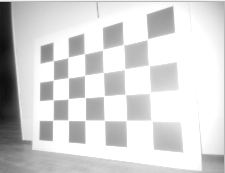
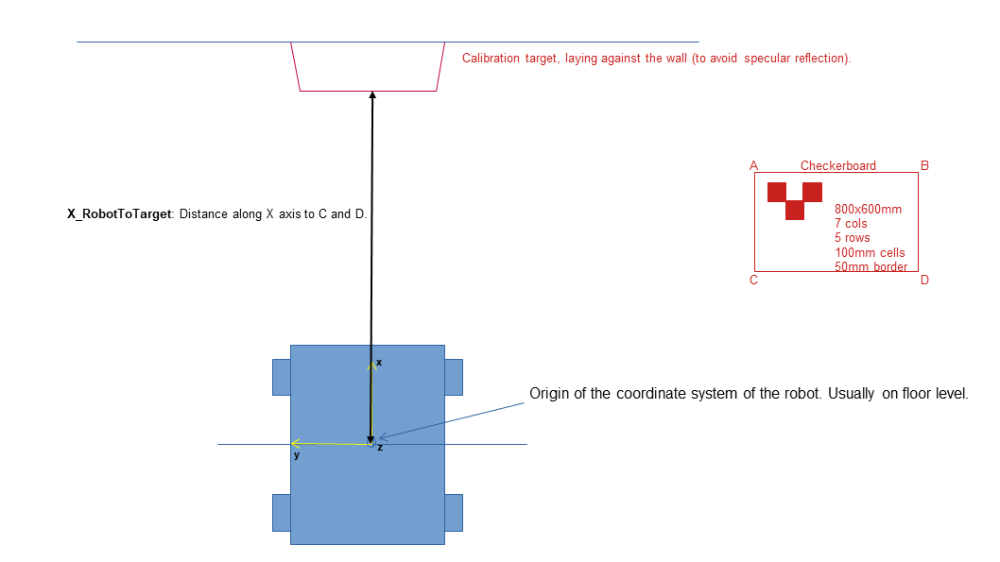
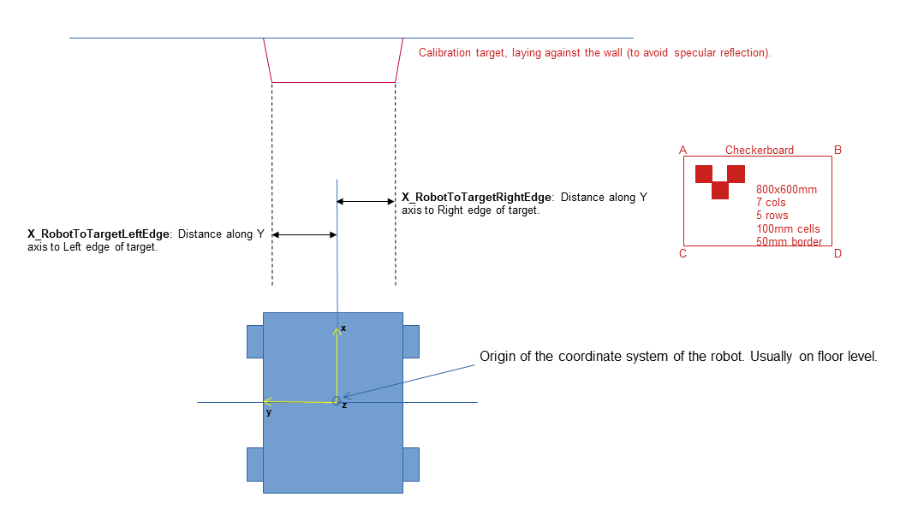
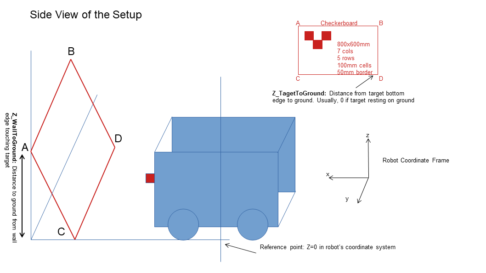

Extrinsic Calibration Routine for O3R Camera
Vision sensors are critical for perceiving the environment, however the visual information is of no use unless the sensor data is calibrated. The process to transform the camera frame to the robot base frame is called extrinsic calibration.
This document provides a tutorial for the extrinsic calibration (robot-camera) of the O3R camera using a single image of a standard checkerboard of a known size. This will be done in 3 steps:
Prerequisites
Setting up the scene
Measurement and Calibration
Prerequisites
This tutorial assumes that you have already setup the camera/VPU and can visualise the pointcloud/amplitude images. If you do not have a viewer available, one of the options is to use Rviz along with the ifm3d ROS Wrapper.
You will also need to know the exact location of the robot base frame in order to take distance measurements from that position to the checkerboard.
Make sure the camera is connected to the laptop and you can ping the sensor before you proceed to the next steps.
Setup the environment.
Git clone the repository.
git clone https://github.com/ifm/o3r-utilities.git
Enter the root folder for calibration
cd o3r-utilities/calibration
Create a virtual environment.
python3 -m venv env source env/bin/activate
python -m venv env cd env .\Scripts\activate.bat cd .. pip3 install --upgrade pip
Install dependencies.
pip3 install -r requirements.txt
Checkerboard of size 800x600mm printed on a matte finish paper. Using glossy paper will cause reflections and inhibit accurate calibration of the camera. The exact checkerboard has been given in the resources folder. Stick the checkerboard on a rigid cardboard so that the paper does not flop around during calibration.
Cardboard edges should not extend past the checkerboard dimensions as this will result in error in calibration.
You can also use a different size checkerboard as long as you update the
FrameSize,TargetWidthandTargetHeightin the run.py script.
Setting up the scene
Rest the checkerboard on a wall and make sure the checkerboard occupies the maximum field of view of the camera for the most accurate calibration.
The easiest way to place the checkerboard is to have it be exactly flat with the wall as it reduces the number of distance measurements you will need to take. This is not an absolute requirement though.
Tilt the board if a reflection of the illumination is seen on the camera image. You can tilt as long as the top edge is fully resting on the wall. Keep in mind that all the edges of the board should still be visible by the camera after tilting the checkerboard.
Below are 2 examples of the amplitude image seen in a bad and a good checkerboard placement.
Bad placement: High reflection on checkerboard causes the intersections between the checkerboard cells to not get detected.

Good placement: Low reflection allows all intersections to be captured.

Orientation of the checkerboard
If the camera is mounted horizontally (longer edge of camera parallel to ground), place the checkerboard horizontally with the longer edge parallel to the ground. Like this:

If the camera is mounted vertically (shorter edge of camera parallel to ground), place the checkerboard vertically with the shorter edge parallel to the ground. Like this:

Measurement and Calibration
Open the run.py script and update the IP address (line 9) according to the one associated to your VPU. By default it is set to 192.168.0.69.
Set
Horizontalvariable as True if camera mounting is horizontal or False otherwise (line 10).Set
UpsideDown(line 11) variable as False if camera label is printed at the top while mounted horizontally or left side if mounted vertically, when looking at the field of view from behind the camera, True otherwise.
For the calibration process, we assume a right hand coordinate system for the measurement of all the distances and that the robot base frame is located at floor level (Z=0). All the distances are measured in meters [m]
Measure the X_RobotToWall (line 14) as:
Measure the X_RobotToTarget (line 15) as:

If the checkerboard is placed exactly flat on the wall, the measurements of X_RobotToWall will be equal to X_RobotToTarget.
Measure the Y_RobotToTargetLeftEdge(line 18) and Y_RobotToTargetRightEdge(line 19) as:

Measure the Z_WallToGround (line 16) and Z_TargetToGround (line 17) as:

Z_TargetToGround is 0 if the checkerboard is resting on the ground
Update the port for the camera (line 12) to be calibrated before you run the calibration script as the script will erase the old calibration and update it with new calibration values.
Run the run.py script for the calibration.
python3 run.py
After calibrating all the cameras, perform a soft reboot of the VPU to save the values even after unplugging the VPU.
from ifm3dpy import CameraBase
o3r = CameraBase()
o3r.reboot()
ifm3d reboot